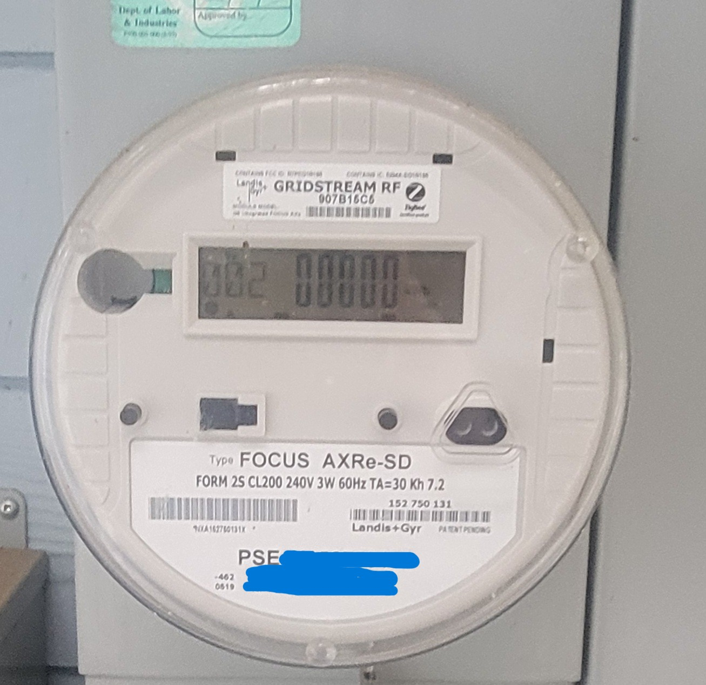
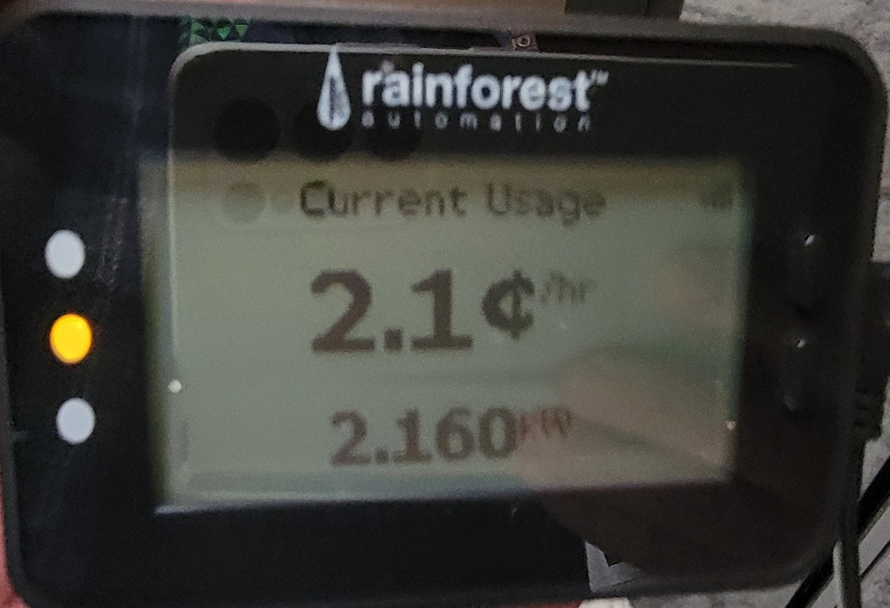

Puget Sound Energy (PSE) was selling a device, Rainforest Automation EMU-2, to allow customers to find out how much electricity each appliance uses in an effort to reduce electricity usage. A customer would put batteries in the unit, walk around and turn on and off various appliances to see the usage.
My intent was to track my electricity usage over time, usually on a daily basis. PSE billing is once per month which was too late to see a spike in usage. I searched for any program that used the EMU-2 and found the Python module emu_power Version 1.51. emu_power is based on the XML specification for the Rainforest Raven API. PSE charges different amounts per kWh once the total for the month is known. kWh ranges got charged more per kWh as total electricity is known.
This project then developed into a great opportunity to improve my Python programming skills. Later changes included morphing my code into more Object Oriented style, adding Python logging and then converting it into a Python module for easier installation.
This Python project interfaces via USB to a hardware device that wirelessly connects to a Puget Sound Energy electrical power meter where it receives an instantaneous kWh reading. The code takes 60 readings once a minute for an hour, sums them, and calculates an averaged amount of kWh for that hour. It then inserts that reading into a MySQL database. Another database could be used with another driver. The end user can use SQL to select any number of rows to derive daily, weekly, etc counts which can be inserted into an Excel spreadsheet for charting.

Copy project to your PC, change to the root folder of the project and run the following command.
pip install .
The code needs a Python library for MySQL as an installed MySQL database with a configured table.
I had to make changes when upgrade MySQL from 8.0.42 LTS to 8.4.5 LTS. I upgraded from the Python library mysql_connector to mysql_connector_python. I had to switch from MySQL Workbench 8.0.42 to HeidiSQL 12.11.0.7065 due to the upgrade in the MySQL database. I expect that changing to another database would only require changes to the database.py module.
I also switched to making this code into a Python module as a learning experience. This change caused more files to be created in the project. I ran into permissions issues that should be, but were not, addressed with Python Virtual Environments or venv. venv would confine library changes but I have not investigated it more.
I ran commands to upgrade the project’s build:
python -m build
Normal installation:
python install .
The following example is for a Windows PC. pythonw.exe is used to submit the code to run in the background without a GUI window. The end user would need to use nohup to run it on Linux. No output is expected on stdout and stderr as Python logging is used.
powershell.exe -File runme.ps1
runme1.ps1
$project = "-m powercost_project"
$iniFile = "D:\u\apps\powercost\ponderosa_electricity_usage.ini"
$log_start_stdout = "logs/powercost_stdout.txt"
$log_start_stderr = "logs/powercost_stderr.txt"
$processOptions = @{
FilePath = "pythonw.exe"
ArgumentList = "$project --ini $iniFile"
WorkingDirectory = "."
NoNewWindow = $true
PassThru = $true
RedirectStandardOutput = $log_start_stdout
RedirectStandardError = $log_start_stderr
}
$process = Start-Process @processOptions
Write-Output "Code sumitted, PID = " + $process.Id
On my Windows 11 desktop PC and Ubuntu 24.04 LTS laptop, there are different designations for port:
Running Powercost can be done via a Bash script like:
runme.sh
#!/usr/bin/env bash
basedir="/home/james/powercost"
cd $basedir
iniFile="ponderosa_electricity_usage.ini"
log_start_stdout="logs/powercost_stdout.txt"
log_start_stderr="logs/powercost_stderr.txt"
project="-m powercost_project --ini $iniFile"
nohup python $project > $log_start_stdout 2> $log_start_stderr &
The [setup] section of the INI file looks:
[setup]
the_port = /dev/ttyACM0
log_dir = /home/james/powercost/logs
running_file = %(log_dir)s/ponderosa_electricity_usage.running
stop_file = %(log_dir)s/ponderosa_electricity_usage.stop
; Levels are: NOTSET, DEBUG, INFO, WARNING, ERROR, CRITICAL
log_level = INFO

Primary MySQL Database Table pse.usage_e

Important Data Items
DB_setup.sql
create database pse
use pse;
CREATE TABLE `pse`.`usage_e` (
`ID` INT NOT NULL AUTO_INCREMENT,
`UDate` DATE NOT NULL,
`UTime` TIME NOT NULL,
`kWh` DECIMAL(7,3) NULL DEFAULT 0.0,
PRIMARY KEY (`ID`),
UNIQUE INDEX `I_USAGE_E_UNIQUE` (`ID` ASC) VISIBLE)
COMMENT = 'Puget Sound Energy Electricity Usage for The Ponderosa';
DB_hourly.sql
use pse;
select
UDate,
substring(UTime,1,5) as the_hour,
kWh
from
usage_e
order by
ID desc;
DB_daily.sql
use pse;
select
UDate as Date
,ELT(dayofweek(UDate),'Sunday','Monday','Tuesday','Wednesday','Thursday','Friday','Saturday') as DoW
,round(sum(kWh)/count(kWh),3) as kWh_Hr_avg
,count(kWh) as hours
,sum(kWh) as kWh_day_total
,round(((sum(kWh)/count(kWh))*24*0.105),2) as kWh_day_total_cost
,round((sum(kWh)/count(kWh))*24,3) as kWh_24hr_est
from
usage_e
where
UDate >='2022-11-05' and
UDate <='2022-12-04'
group by
UDate
order by
UDate
;